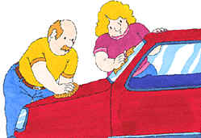

Garage tasks and concepts
Lawnmower

Lawnmowers can be electric, gas-powered, or manual.
Oil
Motor oil keeps your car's engine running smoothly. Oil should be changed every 6000 kilometers.
Related Concepts
- Changing the oil
Paint
Example : Store unused portions in the garage.
Related Concepts
- Spray painting
Shelving
It keeps things neat and organized.
Related Concepts
- Organizing the workbench and tools
Snow shovel
Use the snow shovel to clear the drive way and side walk of snow in the winter. A good snow shovel has a straight, wide scoop and a strong handle. To help snow come off the scoop, spray the scoop with cooking spray.
Related Concepts
- Shovelling snow
Tool box
A tool box contains many compartments for organizing tools and hardware. Keep the tool box handy for all sorts of jobs around the house.
Related Concepts
- Tools - Organizing the workbench and tools
Tools
Keep your tools organized in a tool box.
Related Concepts
- Tool box - Organizing the workbench and tools
Water hose

Related Concepts
- Washing the car
Wheel barrow
A good wheel barrow will save your back from extensive trauma when you garden.
Workbench
Use the workbench for storing tools and hardware, and for doing small projects.
Related Concepts
- Organizing the workbench and tools
Windshield washer fluid
Keep your car's windshield washer fluid topped up so you will have a clean windshield whatever the weather or insect population.
Changing the oil in your car
Once every 6000 kilometers or three months, change the oil in your car. This will help keep the engine in good condition.
-
Remove the old oil filter.
-
Drain the old oil.
-
Install a new oil filter and gasket.
-
Add new oil to the engine.
-
Check the air filter and replace or clean it.
-
Top up the windshield washer fluid.
Related Concepts
- Oil - Windshield washer fluid
Washing the car
-
Move the car onto the driveway.
-
Attach the water hose to a spout and pull the free end over to the car.
-
Fill a bucket with soapy water.
-
Use a sponge to apply the soapy water to the car and scrub off the dirt.
-
Rinse the car by spraying clean water from the hose.
-
Dry the car using a dampened chamois.
Related Concepts
- Water hose
Spray painting
The garage is a good place to spray paint.
-
Move the car out of the garage to avoid getting paint on it.
-
Place newspaper, cardboard, or a drop-cloth on the garage floor.
-
Place the object to be painted on the covered area.
-
Follow the directions on the paint can to paint the object.
-
Let the paint dry thoroughly before you move the object.
Related Concepts
- Paint
Shovelling snow
-
Get the shovel out of the garage
-
Shovel the driveway, starting at the garage door and working out to the street.
-
Shovel the sidewalk in front of your house.
-
Shovel the walk to your front door.
Related Concepts
- Snow shovel
Taking out the garbage
-
Find out from the town what day of the week garbage is collected in your neighborhood.
-
The night before collection, place the garbage cans on the curb.
-
After the garbage has been collected, move the cans back into your garage.
Related Concepts
- Lawnmower